Spec-driven development for AI coding agents: your agent proves a story works before it calls it done.
Open-source tool packs for Claude Code, Codex and Cursor. Each pack is a set of skills and playbooks your agent follows, with the evidence to show it did.
Tool packs · 1
-
Spec-driven development
Story maps, plans and acceptance criteria in your repo. Every criterion runs as a Cucumber test, and a story can't be marked done until it passes.
About this pack/plugin install nikos --marketplace nikovijay/NikOS